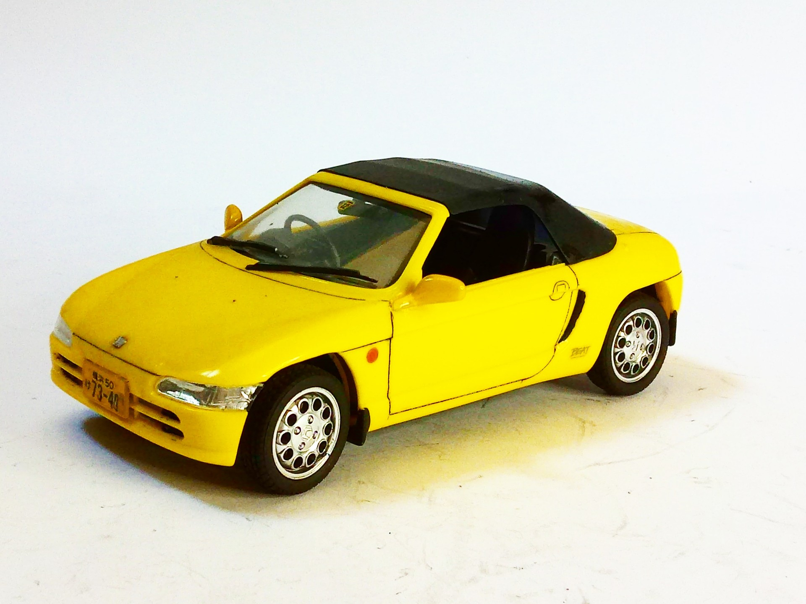
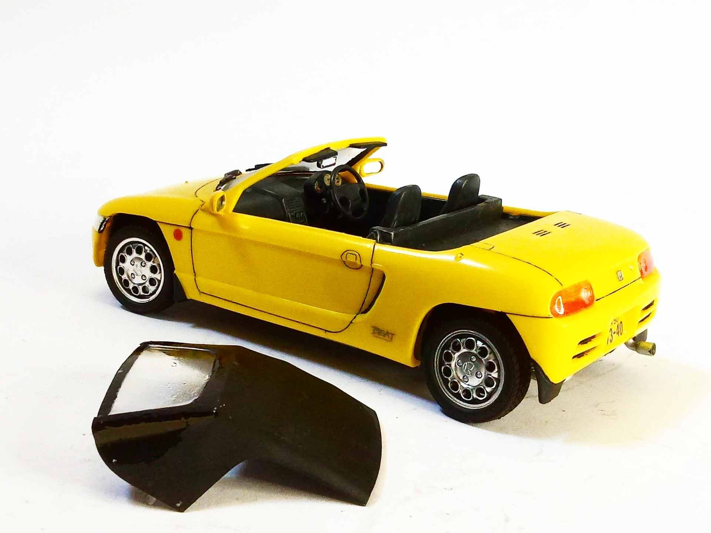
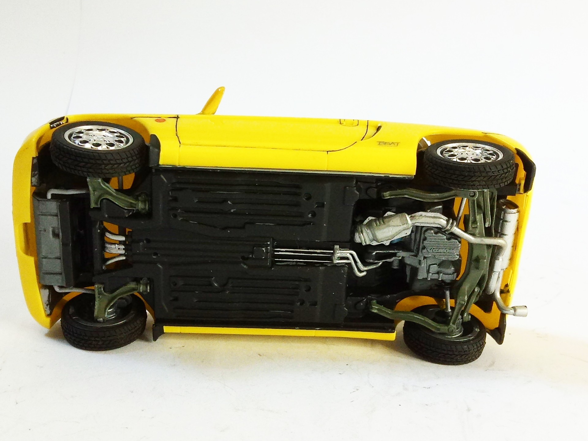

Auto e veicoli stradali · scale model archive
Honda Beat
Honda Beat — Kit: Aoshima, Scale: 1/24. Cute little car, open or closed version #1/24 #Aoshima

Photo gallery


English description
Cute little car, open or closed version
#1/24 #Aoshima
Descrizione italiana
Grazioso piccolo auto, open or closed versione.